Group 23: David Stanley/Jhonie Geffa Fall 2020 ECE 4554/5554 Computer Vision: Course Project Virginia Tech
Final Report
Abstract
The goal of this project was to analyze and explore existing methods of identifying pedestrians in pictures to
visualize an area around the pedestrians not to be entered by autonomous vehicles.
This project was inspired by the recent incidents involving autonomous vehicles and pedestrians.
The approach for this project was to use both holistic detection and part-based detection to find pedestrians in each image.
While neither method was optimal, holistic detection was much more effective at identifying pedestrians.
Teaser Figure
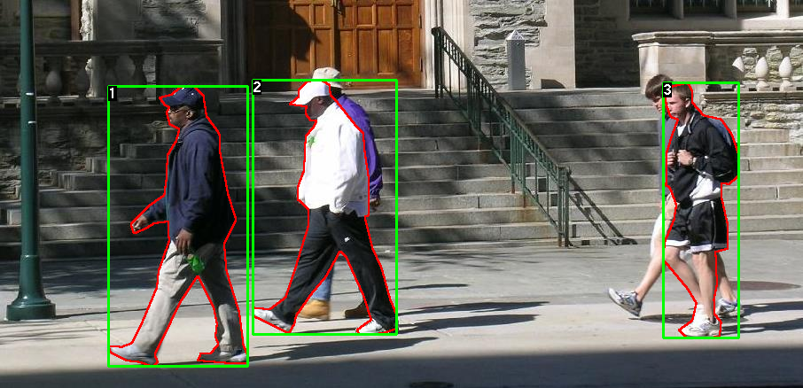
Figure 1: Example of correctly identified pedestrians from UPenn research.
Introduction
The motivation for this project is the rapid development of autonomous vehicles. These vehicles rely on pedestrian detection to avoid accidents. The goal of this project was to learn more about how pedestrians are identified by machines.
Background research identified that existing approaches include holistic detection, part-based detection, patch-based detection, motion-based detection, and detection using multiple cameras.
For this project, two different types of pedestrian detection systems were implemented: holistic detection and part-based detection.
In holistic detection, the algorithm searches for the whole body of the person to decide if it shows up in the image. In part-based detection, a person’s body is subdivided into 2 or more parts and those parts are used to identify a person in an image.
For this project, the person model was subdivided into a top and lower half. If both halves were found and were close to each other, the algorithm would detect that person.
This is a fascinating problem
that has a lot of real world impact as autonomous vehicles come closer and closer to full commercialization.
Approach
Originally, the program was going to create its own holistic histogram of oriented gradients (HOG) and use openCV’s classifier to detect objects, but that did not work out.
The default people detector used by openCV (HOGDescriptor_getDefaultPeopleDetector) was incompatible with the HOG calculated.
The created HOG was scaled from 0 to 1 and included no negative values, while the HOGDescriptor_getDefaultPeopleDetector included negative values.
Thus the created HOG was incompatible with the openCV function.
A self-created classifier was discussed, but was out of scope for this project. So the project pivoted toward using openCV’s functions for computing both detection methods.
The program followed these steps:
1. Input an image from the data set.
2. Find the amount of people and location of people in the image using holistic and part-based detection.
3. Draw the bounding box around the people.
4. Compare those results to the annotated data of the image for each method.
5. Update the total number of correct, under, and over predictions for each method.
6. Repeat steps 1 to 5 until all images are read through.
7. Output the relevant data.
The dataset of people was obtained from the Penn-Fudan Database for Pedestrian Detection and Segmentation. The dataset included 170 images with 345 labeled pedestrians.
The images were input into the two detection algorithms and compared to the annotated images provided by the dataset.
This dataset was large enough for this project, because no training was required. If the program trained its own classifier, then the number of images needed would run in the thousands.
The general method for both detection methods was to first search through the entire image pixel by Fpixel using a window of m x n dimensions, compute the HOG for each window, find the feature vector, and use said feature vector with the classifier to determine if it was a person.
To complete said method code from geeksforgeeks using openCV was adapted into this program. Using the HOG class provided in openCV, the setSVMDetector() and detectMultiScale() functions were used to detect people.
The setSVMDetector() was used to create the classifiers used for the two searching methods. The holistic detection method used openCV’s HOGDescriptor_getDefaultPeopleDetector() as its classifier, while the part-based detection used haarcascade_lowerbody.xml and haarcascade_upperbody.xml provided by openCV.
Experiments and Results
This project used a large existing dataset from UPenn, shown here
for experimental data. The dataset contained a few hundred images. As described above, the general approach was to apply both
holistic and part-based detection to the dataset and then compare the two approaches.
To do this, a few major metrics were used (shown below in Qualitative Results):
1. Basic Detection Percentage: The number of times an image had at least one pedestrian identified divided by the total number of images
in the dataset.
2. Real Detection Percentage: The number of times an image identified the correct number of pedestrians divided by the total number of images in the dataset.
The dataset used had .txt files associated with
each image detailing the pedestrian location and number. A python script was created to extract this information. For part-based detection, both the upper
and lower region of the pedestrian needed to be found to count as an identification.
3. Percent Overshoot: The number of times that an image identified too many pedestrians.
4. Percent Undershoot: The number of times that an image identified too few pedestrians.
As seen in the bar chart in Figure 12, holistic detection was much more effective than part-based detection at identifying pedestrians. The holistic approach
successfully identified a pedestrian in over 90% of images, where the part-based approach only identified a pedestrian in about 65% of images. However, neither approach
was highly successful at correctly identifying all pedestrians in each image. The holistic approach only identified every pedestrian correctly in each image 46% of the time.
The most concerning piece of data gathered was in the percent of pedestrians that were missed, where holistic detection undershot the number of pedestrians 29% of the time and part-based
detection missed pedestrians in 88% of the images.
One of the main drivers of missed pedestrians in the dataset was the way that pedestrians were standing. Visually observing several examples, each algorithm performs relatively poorly
when pedestrians are walking at a side-profile. There are a few reasons for this. First, the feature vector that is shown at a side profile is smaller in regards to the image. When a pedestrian
is facing the camera, there are more features to extract since they take up a larger area. Additionally, there is more research that has been done regarding recognition of various body parts from the front
(like facial recognition), but not as much from the side. Unfortunately, this is a major problem for detecting pedestrians since pedestrians are often viewed from the side if they were to be seen by an autonomous
vehicle. Several examples of this are shown below.
Qualitative Results
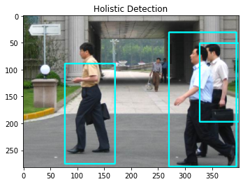
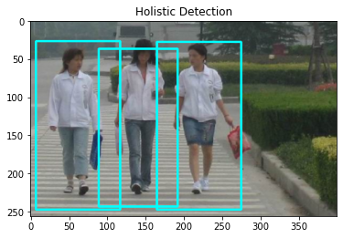
Figures 2/3: Examples of correctly identified pedestrians using holistic detection.
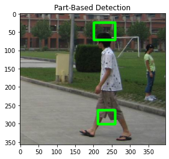
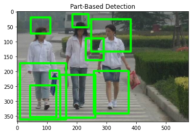
Figures 4/5: Examples of correctly identified pedestrians using part-based detection. Figure 5 shows an example
of forward-facing detection working best.
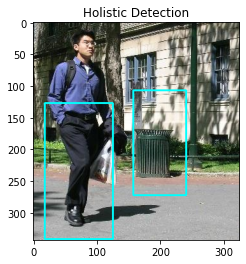
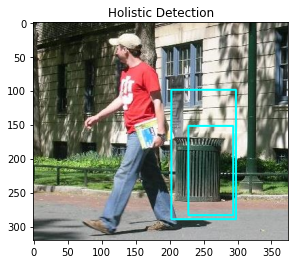
Figures 6/7: Examples of false positives using holistic detection (trash can).
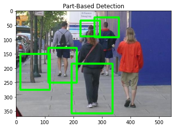
Figure 8: Example of false positive using part-based detection (tree on left of image).
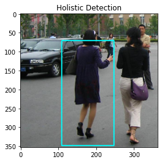
Figure 9: Example of false negative using holistic detection.
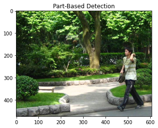
Figure 10: Example of false negative using part-based detection.
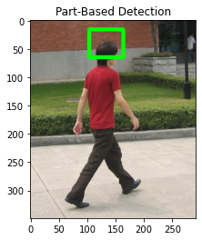
Figure 11: Example of part-based detection missing lower part.
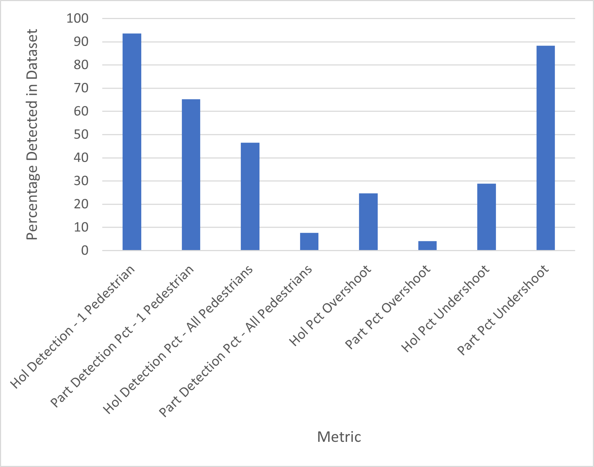
Figure 12: Bar graph showing results across dataset.
Conclusion and Future Work
This report has described the approach and results of two algorithms used to detect pedestrians: part-based detection and holistic detection.
Overall, this paper found why holistic detection is the preferred method of pedestrian detection
in computer vision today. The results obtained show that while holistic detection is far from
perfect, it performs much more reliably than it's part-based counterpart.
One of the most important aspects of detection that needs to be studied is performance variance
at different angles. Both of these algorithms performed much better when a front-facing pedestrian
was shown, while both performed poorly when viewing pedestrians from the side. Even during the
research phase of the project, it was clear that most existing classifiers performed better on front facing
pedestrians.
References
1. V. de Poortere, J. Cant, B. Van den Bosch, J. de Prins, F. Fransens, and L. Van Gool. Efficient pedestrian detection: a test case for svm based categorization. Workshop on Cognitive Vision, 2002. Available online: http://www.vision.ethz.ch/cogvis02/.
2. Dalal, Navneet,Bill Triggs. "Histograms of oriented gradients for human detection." 2005 IEEE computer society conference on computer vision and pattern recognition (CVPR'05). Vol. 1. IEEE, 2005.
3. “Feature Descriptor: Hog Descriptor Tutorial,” Analytics Vidhya, 10-May-2020. [Online]. Available: https://www.analyticsvidhya.com/blog/2019/09/feature-engineering-images-introduction-hog-feature-descriptor/. [Accessed: 22-Nov-2020].
4. “Pedestrian Detection using OpenCV-Python,” GeeksforGeeks, 26-Mar-2020. [Online]. Available: https://www.geeksforgeeks.org/pedestrian-detection-using-opencv-python/. [Accessed: 22-Nov-2020].
5. Felzenszwalb, Pedro F., et al. "Object detection with discriminatively trained part-based models." IEEE transactions on pattern analysis and machine intelligence 32.9 (2009): 1627-1645.